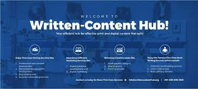

It’s critical to protect your brand identity by owning your web address and website. This will avoid surrendering control of your brand to a third party website and their ads. Remember, owning your own domain name and using a reputable host company is just as important as choosing the domain name itself. Owning your domain name is vital to your business, brand and online presence. Not only does it build your brand, it also makes people more likely to engage with your website.

The old adage that “Content is King” still rings true to this day, possibly even more than before. How you present your content is just as important. Make sure content is original, relevant and interesting to effectively get your message across. With good web development, you control the user experience, manage content relevancy and your conversion process. Good content is what sets your website apart from everyone else and delivers the right message to your customers. Website content always begins with proper market research where you identify your high-value customers (HVC). From there you can start defining personas for your website.
It’s no secret that blogs are fundamental to your digital marketing strategy and should be the focal point for all your content marketing activities. Use your social media presence as a means to engage your audience and ultimately bring visitors to your website. Your company blog will also increase the number of relevant inbound links that send readers to the main parts of your website. This, along with SEO, will increase traffic and the duration of each visit to your site.
Good web development means a fully optimised website which plays a vital role in attracting valuable search engine traffic. Consumers are essentially still looking for information by using keyword searches in Google and other search engines. Implementing the right keywords and topics on your website will significantly help visitors find your site. Website traffic is an important indicator and driver of business growth and really helps you to: Determine ROI to see how well your marketing is working Gather insight into your audience to make informed decisions Improve your SEO and search engine credibility Generate more leads, increase conversions, and get more customers overall There are many SEO tactics you can perform on every page of your website to increase their search engine rankings and get more visitors. Take a look at one of our recent blog posts on Adaptive SEO Best Practice For Top Google Rankings.
Effective web development gives you the ability to accurately analyse website statistics. It includes measuring conversion rates, monitoring backlinks and assessing visitor engagement, all of which are essential to improve all your online marketing activities. The goal is to ultimately achieve a return on your web investment and integrating Google Analytics, Google Webmaster tools and a CMS will certainly help.